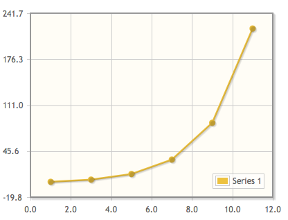
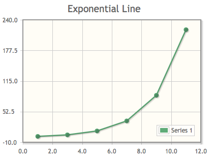
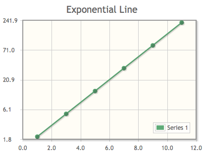
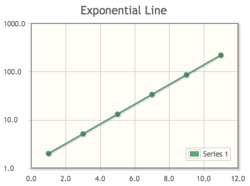

jqPlot is a jQuery plugin to generate pure client-side javascript charts in your web pages.
The jqPlot home page is at http://www.jqplot.com/.
The project page and downloads are at http://www.bitbucket.org/cleonello/jqplot/.
Below are a few examples to demonstrate jqPlot usage. These plots are shown as static images. Many more examples of dynamically rendered plots can be seen on the test and examples pages here: ../../tests/.
jqPlot requires jQuery (1.4+ required for certain features). jQuery 1.4.4 is included in the distribution. To use jqPlot include jquery, the jqPlot jQuery plugin, jqPlot css file and optionally the excanvas script for IE support in your web page. Note, excanvas is required only for IE versions below 9. IE 9 includes native support for the canvas element and does not require excanvas:
<!--[if lt IE 9]><script language="javascript" type="text/javascript" src="excanvas.js"></script><![endif]--> <script language="javascript" type="text/javascript" src="jquery-1.4.4.min.js"></script> <script language="javascript" type="text/javascript" src="jquery.jqplot.min.js"></script> <link rel="stylesheet" type="text/css" href="jquery.jqplot.css" />
Add a container (target) to your web page where you want your plot to show up. Be sure to give your target a width and a height:
<div id="chartdiv" style="height:400px;width:300px; "></div>
Then, create the actual plot by calling the $.jqplot plugin with the id of your target and some data:
$.jqplot('chartdiv', [[[1, 2],[3,5.12],[5,13.1],[7,33.6],[9,85.9],[11,219.9]]]);Which will produce a chart like:
You can customize the plot by passing options to the $.jqplot function. Options are described in jqPlot Options in the jqPlotOptions.txt file. An example of options usage:
$.jqplot('chartdiv', [[[1, 2],[3,5.12],[5,13.1],[7,33.6],[9,85.9],[11,219.9]]],
{ title:'Exponential Line',
axes:{yaxis:{min:-10, max:240}},
series:[{color:'#5FAB78'}]
});Which will produce a plot like:
You can use jqPlot plugins (that is, plugins to the jqPlot plugin) by including them in your html after you include the jqPlot plugin. Here is how to include the log axis plugin:
<link rel="stylesheet" type="text/css" href="jquery.jqplot.css" /> <!--[if IE]><script language="javascript" type="text/javascript" src="excanvas.js"></script><![endif]--> <script language="javascript" type="text/javascript" src="jquery-1.4.4.min.js"></script> <script language="javascript" type="text/javascript" src="jquery.jqplot.min.js"></script> <script language="javascript" type="text/javascript" src="jqplot.logAxisRenderer.js"></script>
Important note: For jqplot builds r529 and above (0.9.7r529 and higher), you must explicitly enable plugins via either the { show: true } plugin option to the plot or by using the $.jqplot.config.enablePlugins = true; config options set on the page before plot creation. Only plugins that can be immediately active upon loading are affected. This includes non-renderer plugins like cursor, dragable, highlighter, and trendline.
Here is a the same $.jqplot call but with a log y axis:
$.jqplot('chartdiv', [[[1, 2],[3,5.12],[5,13.1],[7,33.6],[9,85.9],[11,219.9]]],
{ title:'Exponential Line',
axes:{yaxis:{renderer: $.jqplot.LogAxisRenderer}},
series:[{color:'#5FAB78'}]
});Which produces a plot like:
You can further customize with options specific to the log axis plugin:
$.jqplot('chartdiv', [[[1, 2],[3,5.12],[5,13.1],[7,33.6],[9,85.9],[11,219.9]]],
{ title:'Exponential Line',
axes:{yaxis:{renderer: $.jqplot.LogAxisRenderer, tickDistribution:'power'}},
series:[{color:'#5FAB78'}]
});Which makes a plot like:
For a full list of options, see jqPlot Options in the jqPlotOptions.txt file.
You can add as many plugins as you wish. Order is generally not important. Some plugins, like the highlighter plugin which highlights data points near the mouse, don’t need any extra options or setup to function. Highlighter does have additional options which the user can set.
Other plugins, the barRenderer for example, provide functionality the must be specified in the chart options object. To render a series as a bar graph with the bar renderer, you would first include the plugin after jqPlot:
<script language="javascript" type="text/javascript" src="plugins/jqplot.barRenderer.min.js"></script>
Then you would create a chart like:
$.jqplot('chartdiv', [[34.53, 56.32, 25.1, 18.6]], {series:[{renderer:$.jqplot.BarRenderer}]});Here the default LineRenderer is replaced by a BarRenderer to generate a bar graph for the first (an only) series.